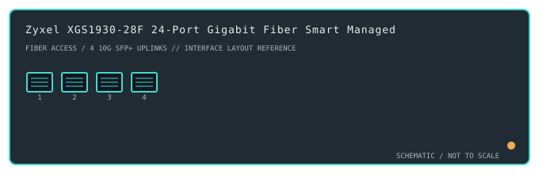

[ MODEL-SPECIFIC NETWORK HARDWARE ]
Zyxel XGS1930-28F 24-Port Gigabit Fiber Smart Managed Switch
A fiber-centric smart-managed switch with 24 Gigabit SFP access cages and four 10GbE SFP+ uplink cages.

IDENTIFICATION: Confirm the complete product label and hardware revision before applying power, firmware or transceiver assumptions. Link and fabric rates below are nominal vendor specifications, not test results.
Detailed specifications and compatibility
| Subcategory | Managed switches |
|---|---|
| Exact product and model | Zyxel XGS1930-28F 24-Port Gigabit Fiber Smart Managed Switch |
| Ports / physical interface | 24 × 100/1000Mb/s SFP slots plus 4 × 10GbE SFP+ uplinks. It is the fiber-port XGS1930-28F variant, not the RJ-45 XGS1930-28. |
| Bus and host connection | 1U rack-mount switch with pluggable SFP/SFP+ host interfaces; module, fiber mode, wavelength, reach and coding must match the peer and supported-transceiver list. |
| Nominal switching performance | 128Gb/s switching capacity listed for the XGS1930 28F design; actual usable throughput is affected by traffic profile, module speed and configuration. |
| Power over Ethernet | No PoE output; all 24 access interfaces are optical SFP cages. |
| Management and software | Zyxel NebulaFlex supports standalone local web management or Nebula cloud management, with L2/L2+ smart features subject to firmware and cloud-service support. |
| Power and physical form | Internal AC-powered, fan-cooled 1U rack switch. SFP/SFP+ modules add heat and power draw; install only within the manufacturer's operating and ventilation limits. |
| Compatibility | Populate access cages with supported 1GbE SFP transceivers and uplinks with compatible SFP+ 10GbE modules or DACs. Match single-/multimode fiber, wavelength, connector and remote link rate; controller enrollment requires a compatible Nebula account/service. |
| Variant identification | XGS1930-28F is the 24-SFP fiber model. XGS1930-28 uses copper access ports and XGS1930-28HP adds PoE; do not mix their connector, power or thermal specifications. |
| Measured throughput | No physical sample was benchmarked for this record. Nominal line rate and switching-fabric ratings are not measured application throughput. |
Revision-specific use notes
XGS1930-28F is the 24-SFP fiber model. XGS1930-28 uses copper access ports and XGS1930-28HP adds PoE; do not mix their connector, power or thermal specifications.
Populate access cages with supported 1GbE SFP transceivers and uplinks with compatible SFP+ 10GbE modules or DACs. Match single-/multimode fiber, wavelength, connector and remote link rate; controller enrollment requires a compatible Nebula account/service.
Zyxel NebulaFlex supports standalone local web management or Nebula cloud management, with L2/L2+ smart features subject to firmware and cloud-service support.
Archival, ESD and preservation notes
Record the full SKU and hardware revision, serial/date code, firmware release, supply label, installed transceiver identifiers and physical port test results. Keep configuration backups free of credentials and private network details.
Disconnect mains and attached PoE loads before service. Keep optics capped and store transceivers separately with their wavelength, fiber mode and part number recorded.
Manufacturer sources
- Zyxel XGS1930 Series manufacturer product pageManufacturer product or model-specific technical documentation. Verify the exact SKU, hardware revision, region and firmware.
- Zyxel XGS1930-28F model specificationsManufacturer product or model-specific technical documentation. Verify the exact SKU, hardware revision, region and firmware.
Confirm the source's revision/region applicability against the item label. Manufacturer link rates and capacity ratings are not measurements of application-level throughput.